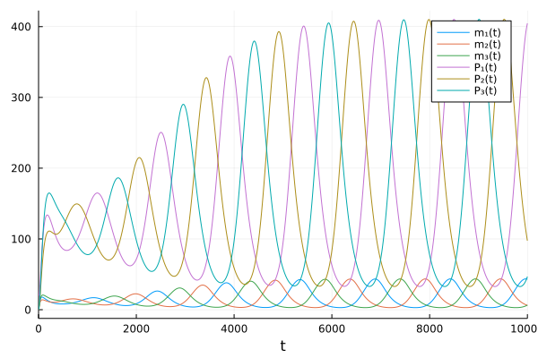
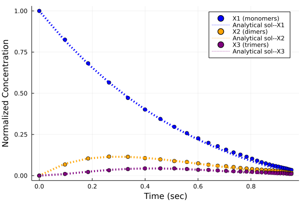

Catalyst
Contents
9. Catalyst#
Catalyst.jl is a domain specific language (DSL) for high performance simulation and modeling of chemical reaction networks. It is based on ModelingToolkit.jl to perform symbolic transformations.
using Catalyst
using DifferentialEquations
using Plots
repressilator = @reaction_network begin
hillr(P₃,α,K,n), ∅ --> m₁
hillr(P₁,α,K,n), ∅ --> m₂
hillr(P₂,α,K,n), ∅ --> m₃
(δ,γ), m₁ ↔ ∅
(δ,γ), m₂ ↔ ∅
(δ,γ), m₃ ↔ ∅
β, m₁ --> m₁ + P₁
β, m₂ --> m₂ + P₂
β, m₃ --> m₃ + P₃
μ, P₁ --> ∅
μ, P₂ --> ∅
μ, P₃ --> ∅
end α K n δ γ β μ
\[\begin{split} \begin{align*}
\require{mhchem}
\ce{ \varnothing &->[$\frac{\alpha K^{n}}{K^{n} + P_3^{n}}$] m_1}\\
\ce{ \varnothing &->[$\frac{\alpha K^{n}}{K^{n} + P_1^{n}}$] m_2}\\
\ce{ \varnothing &->[$\frac{\alpha K^{n}}{K^{n} + P_2^{n}}$] m_3}\\
\ce{ m_1 &<=>[$\delta$][$\gamma$] \varnothing}\\
\ce{ m_2 &<=>[$\delta$][$\gamma$] \varnothing}\\
\ce{ m_3 &<=>[$\delta$][$\gamma$] \varnothing}\\
\ce{ m_1 &->[$\beta$] m_1 + P_1}\\
\ce{ m_2 &->[$\beta$] m_2 + P_2}\\
\ce{ m_3 &->[$\beta$] m_3 + P_3}\\
\ce{ P_1 &->[$\mu$] \varnothing}\\
\ce{ P_2 &->[$\mu$] \varnothing}\\
\ce{ P_3 &->[$\mu$] \varnothing}
\end{align*}
\end{split}\]
states(repressilator)
6-element Vector{Term{Real, Base.ImmutableDict{DataType, Any}}}:
m₁(t)
m₂(t)
m₃(t)
P₁(t)
P₂(t)
P₃(t)
parameters(repressilator)
7-element Vector{Sym{Real, Base.ImmutableDict{DataType, Any}}}:
α
K
n
δ
γ
β
μ
9.1. Convert to ODEs#
# parameters [α,K,n,δ,γ,β,μ]
p = (.5, 40, 2, log(2)/120, 5e-3, 20*log(2)/120, log(2)/60)
# initial condition [m₁,m₂,m₃,P₁,P₂,P₃]
u₀ = [0.,0.,0.,20.,0.,0.]
# time interval to solve on
tspan = (0., 10000.)
# create the ODEProblem we want to solve
oprob = ODEProblem(repressilator, u₀, tspan, p)
ODEProblem with uType Vector{Float64} and tType Float64. In-place: true
timespan: (0.0, 10000.0)
u0: 6-element Vector{Float64}:
0.0
0.0
0.0
20.0
0.0
0.0
sol = solve(oprob, Tsit5(), saveat=10.)
plot(sol)

9.2. Convert to Stochastic simulations#
# redefine the initial condition to be integer valued
u₀ = [0,0,0,20,0,0]
# next we create a discrete problem to encode that our species are integer valued:
dprob = DiscreteProblem(repressilator, u₀, tspan, p)
# now, we create a JumpProblem, and specify Gillespie's Direct Method as the solver:
jprob = JumpProblem(repressilator, dprob, Direct(), save_positions=(false,false))
# now, let's solve and plot the jump process:
sol = solve(jprob, SSAStepper(), saveat=10.)
plot(sol)

10. Calculation of conservation laws#
function conserved(rn)
clawmat = conservationlaws(netstoichmat(rn))
cquants = conservedquantities(species(rn), clawmat)
end
conserved (generic function with 1 method)
rn = @reaction_network begin
(k₊,k₋), A + B <--> C
end k₊ k₋
conserved(rn)
2-element Vector{Any}:
B(t) - A(t)
A(t) + C(t)
11. Generating ReactionSystems Programmatically#
Using ReactionSystem to represent the chemical reactions.
Smoluchowski coagulation equation
The Smoluchowski coagulation equation describes a system of reactions in which monomers may collide to form dimers, monomers and dimers may collide to form trimers, and so on. This models a variety of chemical/physical processes, including polymerization and flocculation.
using ModelingToolkit
using Catalyst
using LinearAlgebra
using DifferentialEquations
using Plots
using SpecialFunctions
## Parameters
N = 10 # maximum cluster size
Vₒ = (4π/3)*(10e-06*100)^3 # volume of a monomers in cm³
Nₒ = 1e-06/Vₒ # initial conc. = (No. of init. monomers) / bulk volume
uₒ = 10000 # No. of monomers initially
V = uₒ/Nₒ # Bulk volume of system in cm³
integ(x) = Int(floor(x))
n = integ(N/2)
nr = N%2 == 0 ? (n*(n + 1) - n) : (n*(n + 1)) # No. of forward reactions
25
# possible pairs of reactant multimers
pair = []
for i = 2:N
push!(pair,[1:integ(i/2) i .- (1:integ(i/2))])
end
pair = vcat(pair...)
vᵢ = @view pair[:,1] # Reactant 1 indices
vⱼ = @view pair[:,2] # Reactant 2 indices
volᵢ = Vₒ*vᵢ # cm⁻³
volⱼ = Vₒ*vⱼ # cm⁻³
sum_vᵢvⱼ = @. vᵢ + vⱼ # Product index
25-element Vector{Int64}:
2
3
4
4
5
5
6
6
6
7
7
7
8
8
8
8
9
9
9
9
10
10
10
10
10
# For simplicity, we allow a user-selected additive kernel or constant kernel.
# set i to 1 for additive kernel, 2 for constant
i = 1
if i==1
B = 1.53e03 # s⁻¹
kv = @. B*(volᵢ + volⱼ)/V # dividing by volume as its a bi-molecular reaction chain
elseif i==2
C = 1.84e-04 # cm³ s⁻¹
kv = fill(C/V, nr)
end
25-element Vector{Float64}:
3.0599999999999996e-7
4.59e-7
6.119999999999999e-7
6.119999999999999e-7
7.65e-7
7.65e-7
9.180000000000001e-7
9.18e-7
9.18e-7
1.071e-6
1.071e-6
1.071e-6
1.2239999999999998e-6
1.2239999999999998e-6
1.2239999999999998e-6
1.2239999999999998e-6
1.3770000000000001e-6
1.3770000000000001e-6
1.3770000000000001e-6
1.3770000000000001e-6
1.53e-6
1.53e-6
1.5299999999999998e-6
1.53e-6
1.53e-6
# state variables are X, pars stores rate parameters for each rx
@parameters t
@variables k[1:nr] X[1:N](t)
pars = Pair.(collect(k), kv)
# time-span
if i == 1
tspan = (0. ,2000.)
elseif i == 2
tspan = (0. ,350.)
end
# initial condition of monomers
u₀ = zeros(Int64, N)
u₀[1] = uₒ
u₀map = Pair.(collect(X), u₀) # map variable to its initial value
┌ Warning: The variable syntax (X[1:N])(t) is deprecated. Use (X(t))[1:N] instead.
│ The former creates an array of functions, while the latter creates an array valued function.
│ The deprecated syntax will cause an error in the next major release of Symbolics.
│ This change will facilitate better implementation of various features of Symbolics.
└ @ Symbolics /root/.julia/packages/Symbolics/4VdEG/src/variable.jl:129
10-element Vector{Pair{Num, Int64}}:
X[1](t) => 10000
X[2](t) => 0
X[3](t) => 0
X[4](t) => 0
X[5](t) => 0
X[6](t) => 0
X[7](t) => 0
X[8](t) => 0
X[9](t) => 0
X[10](t) => 0
# vector to store the Reactions in
rx = []
for n = 1:nr
# for clusters of the same size, double the rate
if (vᵢ[n] == vⱼ[n])
push!(rx, Reaction(k[n], [X[vᵢ[n]]], [X[sum_vᵢvⱼ[n]]], [2], [1]))
else
push!(rx, Reaction(k[n], [X[vᵢ[n]], X[vⱼ[n]]], [X[sum_vᵢvⱼ[n]]],
[1, 1], [1]))
end
end
@named rs = ReactionSystem(rx, t, collect(X), collect(k))
\[\begin{split} \begin{align*}
\require{mhchem}
\ce{ 2 X &->[$\mathrm{getindex}\left( k, 1 \right)$] X}\\
\ce{ X + X &->[$\mathrm{getindex}\left( k, 2 \right)$] X}\\
\ce{ X + X &->[$\mathrm{getindex}\left( k, 3 \right)$] X}\\
\ce{ 2 X &->[$\mathrm{getindex}\left( k, 4 \right)$] X}\\
\ce{ X + X &->[$\mathrm{getindex}\left( k, 5 \right)$] X}\\
\ce{ X + X &->[$\mathrm{getindex}\left( k, 6 \right)$] X}\\
\ce{ X + X &->[$\mathrm{getindex}\left( k, 7 \right)$] X}\\
\ce{ X + X &->[$\mathrm{getindex}\left( k, 8 \right)$] X}\\
\ce{ 2 X &->[$\mathrm{getindex}\left( k, 9 \right)$] X}\\
\ce{ X + X &->[$\mathrm{getindex}\left( k, 10 \right)$] X}\\
\ce{ X + X &->[$\mathrm{getindex}\left( k, 11 \right)$] X}\\
\ce{ X + X &->[$\mathrm{getindex}\left( k, 12 \right)$] X}\\
\ce{ X + X &->[$\mathrm{getindex}\left( k, 13 \right)$] X}\\
\ce{ X + X &->[$\mathrm{getindex}\left( k, 14 \right)$] X}\\
\ce{ X + X &->[$\mathrm{getindex}\left( k, 15 \right)$] X}\\
\ce{ 2 X &->[$\mathrm{getindex}\left( k, 16 \right)$] X}\\
\ce{ X + X &->[$\mathrm{getindex}\left( k, 17 \right)$] X}\\
\ce{ X + X &->[$\mathrm{getindex}\left( k, 18 \right)$] X}\\
\ce{ X + X &->[$\mathrm{getindex}\left( k, 19 \right)$] X}\\
\ce{ X + X &->[$\mathrm{getindex}\left( k, 20 \right)$] X}\\
\ce{ X + X &->[$\mathrm{getindex}\left( k, 21 \right)$] X}\\
\ce{ X + X &->[$\mathrm{getindex}\left( k, 22 \right)$] X}\\
\ce{ X + X &->[$\mathrm{getindex}\left( k, 23 \right)$] X}\\
\ce{ X + X &->[$\mathrm{getindex}\left( k, 24 \right)$] X}\\
\ce{ 2 X &->[$\mathrm{getindex}\left( k, 25 \right)$] X}
\end{align*}
\end{split}\]
# solving the system
jumpsys = convert(JumpSystem, rs)
dprob = DiscreteProblem(jumpsys, u₀map, tspan, pars)
jprob = JumpProblem(jumpsys, dprob, Direct(), save_positions=(false,false))
jsol = solve(jprob, SSAStepper(), saveat = tspan[2]/30)
retcode: Default
Interpolation: Piecewise constant interpolation
t: 31-element Vector{Float64}:
0.0
66.66666666666667
133.33333333333334
200.0
266.6666666666667
333.3333333333333
400.0
466.6666666666667
533.3333333333334
600.0
666.6666666666666
733.3333333333334
800.0
⋮
1266.6666666666667
1333.3333333333333
1400.0
1466.6666666666667
1533.3333333333333
1600.0
1666.6666666666667
1733.3333333333333
1800.0
1866.6666666666667
1933.3333333333333
2000.0
u: 31-element Vector{Vector{Int64}}:
[10000, 0, 0, 0, 0, 0, 0, 0, 0, 0]
[8255, 676, 102, 18, 3, 0, 0, 0, 0, 0]
[6821, 1040, 221, 66, 22, 8, 2, 0, 0, 0]
[5653, 1157, 325, 125, 47, 24, 10, 9, 3, 1]
[4718, 1143, 397, 171, 71, 50, 26, 18, 10, 5]
[4016, 1061, 437, 199, 90, 61, 48, 28, 21, 19]
[3441, 983, 438, 223, 106, 75, 67, 34, 34, 36]
[2964, 885, 440, 236, 134, 85, 69, 47, 37, 63]
[2579, 829, 402, 236, 139, 98, 83, 55, 51, 85]
[2264, 747, 354, 246, 144, 97, 81, 78, 67, 110]
[1990, 662, 348, 226, 145, 108, 79, 88, 82, 137]
[1787, 599, 318, 208, 152, 117, 95, 92, 94, 152]
[1576, 571, 287, 196, 150, 123, 94, 92, 115, 172]
⋮
[742, 342, 191, 137, 101, 115, 113, 87, 129, 361]
[675, 326, 181, 133, 97, 115, 116, 82, 125, 383]
[620, 312, 173, 138, 96, 111, 107, 95, 120, 395]
[578, 293, 164, 136, 94, 106, 97, 98, 129, 407]
[543, 273, 155, 126, 95, 103, 97, 99, 132, 419]
[507, 255, 158, 118, 92, 100, 95, 99, 130, 435]
[472, 237, 157, 107, 86, 104, 94, 98, 131, 448]
[445, 227, 143, 99, 91, 98, 89, 101, 138, 456]
[417, 208, 125, 97, 86, 105, 85, 103, 135, 471]
[386, 194, 120, 98, 84, 101, 88, 102, 134, 481]
[359, 188, 114, 94, 84, 98, 85, 100, 136, 492]
[345, 171, 110, 94, 79, 96, 86, 93, 140, 503]
# Results for first three polymers...i.e. monomers, dimers and trimers
v_res = [1;2;3]
# comparison with analytical solution
# we only plot the stochastic solution at a small number of points
# to ease distinguishing it from the exact solution
t = jsol.t
sol = zeros(length(v_res), length(t))
if i == 1
ϕ = @. 1 - exp(-B*Nₒ*Vₒ*t)
for j in v_res
sol[j,:] = @. Nₒ*(1 - ϕ)*(((j*ϕ)^(j-1))/gamma(j+1))*exp(-j*ϕ)
end
elseif i == 2
ϕ = @. (C*Nₒ*t)
for j in v_res
sol[j,:] = @. 4Nₒ*((ϕ^(j-1))/((ϕ + 2)^(j+1)))
end
end
# plotting normalised concentration vs analytical solution
Plots.default(lw=2, xlabel="Time (sec)")
scatter(ϕ, jsol(t)[1,:]/uₒ, label="X1 (monomers)", markercolor=:blue)
plot!(ϕ, sol[1,:]/Nₒ, line = (:dot,4,:blue), label="Analytical sol--X1")
scatter!(ϕ, jsol(t)[2,:]/uₒ, label="X2 (dimers)", markercolor=:orange)
plot!(ϕ, sol[2,:]/Nₒ, line = (:dot,4,:orange), label="Analytical sol--X2")
scatter!(ϕ, jsol(t)[3,:]/uₒ, label="X3 (trimers)", markercolor=:purple)
plot!(ϕ, sol[3,:]/Nₒ, line = (:dot,4,:purple), label="Analytical sol--X3",
ylabel = "Normalized Concentration")
